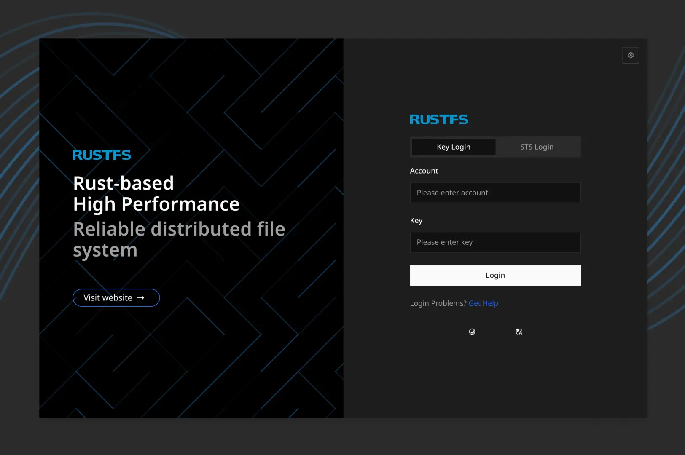

RustFS vs Minio

Раньше много пользовался Minio, бывало удобно, когда нужно быстро поднять сервис для перекидывания файлов.
Самая большая проблема у Minio, которая меня преследует в последнее время – жёсткие требования минимального объёма свободного места на диске. Разработчики говорят: нужно минимум 10% свободного места. Неважно абсолютное значение, хоть даже 400T, как в одном из issues на GitHub.
На днях нашёл RustFS, прямой аналог Minio. RustFS даёт спокойно записать файлы и при 1% свободного места.
Для домашнего пользования или мини-лабы – самое то!